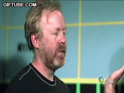

Jetas
 De: La Frikipedia, la enciclopedia extremadamente seria.
De: La Frikipedia, la enciclopedia extremadamente seria.

|
La información contenida en este artículo es una mínima parte de su jugo total, así que ponte los guantes, saca el tupperwere y empieza a exprimir el tema. Si lo haces serás recompensado con una galleta en almíbar y algo más.
|
| De la serie anatomía para todos:
|
| Jetas
|
|
|
| Nombre científico
|
'jetutis carutus'
|
| Localización
|
Ariva del cuello
|
| Función principal
|
Ser golpeada, besarla y lamerla
|
| Función secundaria
|
Portar los ojos, la bocasa y la naris
|
| Aspecto general
|
Horenda
|
| Número habitual
|
1 o 2
|
| Vital / no vital
|
Vital si no te das un guamaso ya que tiene los ojos
|
| Nivel de frikismo
|
La mas baja
|
| Ejemplo de poseedor
|
IP anónima
|
Dícese del soberano hijo de la gran cara, no podrían conseguir con facilidad.
Tipos de jetas
Dentro de los jetas, se pueden distinguir varios tipos:
- Carotas: Son estos que dejan caer las cosas, haber si les cuela y lo consiguen, sin esforzarse demasiado (tipo común). Son los típicos que te piden pasar delante tuya en la cola del súper.
- Bastante jetas: Estos son algo mucho bastante más descarados que los carotas, y piden cosas, sin preocuparse mucho por conseguirlas, pero suelen ser cosas de mayor importancia que las que piden los carotas. Estos también te piden de pasar en la cola del súper, pero teniendo el carro lleno.
 El principal uso de las jetas (click para ver la imagen en movimiento)
- Malditos jetas de los cojones: Estos no tienen respeto por nada ni nadie, y pasan por encima de los demás para conseguir algo, aun jodiendo al resto de personas humanas de nuestro querido planeta Tierra. Pueden llegar a pedir pinchos en un bar, aun sin consumir nada.
- Jetas cabezones superinsistentes tocacojones: (También conocidos en mierda que les miren mal y que les digan que no, porque seguirán insistiendo hasta el punto de pillarles odio. Estos van a la típica pizzería de barrio, con 2x1 durante días de semana, a pedirle al pobre dependiente, que le hagan la oferta en domingo o a un turco a que le den un postre que no se puede llevar para comer fuera o tener una puta fortuna y una puta jeta para pedir de todo para asi no gastar una mierda y aumentarla. Ademas no se les puede hacer cambiar de opinión, ya que sufren una fuerte obsesión y anhelo continuos por sus combicciones (sus antepasados eran los típicos gilipollas que pensaban que la Tierra era cuadrada) como por ejemplo: Comprar una puta moto de mierda creyendo que asi las mujeres se rendiran a sus pies habiendo sacado ya el carnet de coche y pudiendo asi hacer atroces mongolidades, etc.
La mayoría de jetas, son unos piosos, pero tener un jetas como amigo, puede ser de gran ayuda. Ya para saltarte colas, como para viajar de gorra en coches ajenos.
Autor(es):
- Nexo
- Alex2610
- Azulejos
- Sharck-o
- NRikee
- Veni Vidi Vici
- Catacras
- Krusher.
- Jose Fer
- Luxi
Frikipedia 2005-2016, Licencia
GFDL 1.2 - Extraído por FrikiLeaks